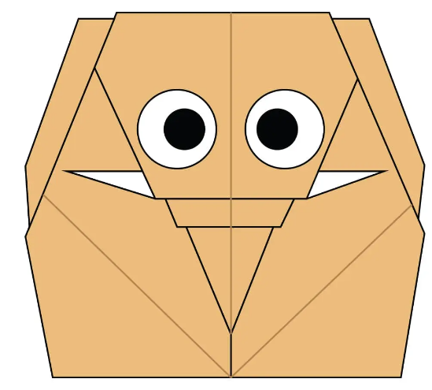
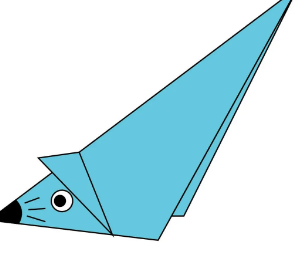
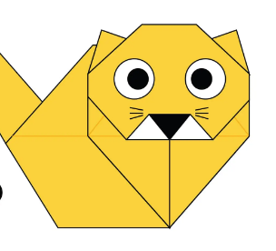

Interesting Facts about Elephant
- They're the world's largest land animal and have thick skin
- Their tusks are actually teeth and their trunk have mad skills
- Elephants are constantly eating and communicate through vibrations
- You can tell the two species apart by their ears
- Calves can stand within 20 minutes of birth

Interesting Facts about Mouse
- Mouse can squeeze through the tiniest of gaps
- Mouse are like Daredevil and do not like cold
- Mouse have weak eyesight
- Mouse teeth never stop growing and have supersonic hearing
- Mouse are amazing at high jump

Interesting Facts about Cat
- Cats are one of, if not the most, popular pet in the world.
- There are over 500 million domestic cats in the world.
- Cats and humans have been associated for nearly 10000 years.
- Cats conserve energy by sleeping for an average of 13 to14 hours a day.
- The record for the longest cat ever is 48.5 inches